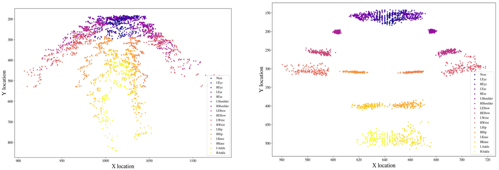

Code
from typing import TypeVar, Generic, List, Optional, Callable
from dataclasses import dataclass, field
import numpy as np
import pickle
import cv2Ali Zaidi
November 17, 2025
- The angle of the hips and shoulders
- The angle of joints (wrist, elbow + hand)
- Club head informationclass SwingMetaData:
"""Data Container for a swings video metadata
"""
def __init__(self,
path: str,
get_swing_idx=False,
get_score=False,
):
"""
Initialize the swing data and associated metadata
Args:
path: file_path to data
"""
self.path = path
self.str_path = self.get_str_path()
self.video_path = f'{self.str_path.split(".")[-2]}.mp4'
self.file_name = self.str_path.split('/')[-1].split('.')[0]
if get_swing_idx:
self.swing_idx = int(self.file_name.split('_')[-3])
if get_score:
self.score = self.file_name.split('_')[-1].split('.')[0]
def get_str_path(self):
# Just making sure the path being used is a str + not path object
return str(self.path)
def get_video_name(self):
video = '_'.join(self.str_path.split('/')[1].split('_')[:2])
return video'/data/full_videos/ymirza/sep14/IMG_1093/keypoints/IMG_1093_swing_6_score_None'swing_meta = SwingMetaData(files[0], get_swing_idx=True, get_score=True)
print(f'Our meta class can store useful information like the filename \n --->\
{swing_meta.file_name}')
print(f'Also the swing index \n --->\
{swing_meta.swing_idx}')
print(f'And the score (when added) \n --->\
{swing_meta.score}')
print(f'For plotting and output purposes, a path to our labeled video is also available')Our meta class can store useful information like the filename
---> IMG_1093_swing_6_score_None
Also the swing index
---> 6
And the score (when added)
---> None
For plotting and output purposes, a path to our labeled video is also availableclass SwingKeypointData(SwingMetaData):
"""
Class to handle keypoint data
Will take a videos metadata and pull down keypoint values and scores
"""
def __init__(self, video_path):
super().__init__(video_path)
#self.metadata = metadata
self.kp_dicts = self.get_kp_dicts()
self.key_points = self.get_keypoints()
self.scores = self.get_scores()
self.kps = np.concatenate([self.key_points, np.expand_dims(self.scores, -1)], axis=2)
def get_kp_dicts(self):
# Get the frame by frame output dicts from pose estimation models
with open(self.str_path, 'rb') as f:
loaded_dicts = pickle.load(f)
return loaded_dicts
def get_keypoints(self):
kp_dicts = self.kp_dicts
return np.stack([self.kp_dicts[key]['keypoints'] for key in kp_dicts.keys()])
def get_scores(self):
kp_dicts = self.kp_dicts
return np.stack([self.kp_dicts[key]['keypoint_scores'] for key in kp_dicts.keys()])
def get_frame(self, idx):
''' Just grabs a single frames keypoints and scores
'''
kps = self.key_points[idx]
scores = self.scores[idx]
return np.column_stack((kps, scores))
def get_frames(self, indexes):
'''
num_idxs = len(Indexes)
Takes a list of indexes and returns an array wof [num_idxs, 17, 3]
[1] 17 keypoint markers
[2] 3 keypoint values/certaintainty (X, Y, Score)
'''
return np.stack([self.get_frame(idx) for idx in indexes])
def __len__(self):
return len(self.key_points)with our SwingKeyPointData class, we can store the raw keypoint values
A swings full keypoints/confidence array would have shape: (180, 17, 3)
If we want to access just the keypoints we can we can access
the "key_points" attribute: (180, 17, 2)
If we are interested in seeing just confidence values we can access
the "scores" attribute: (180, 17)class KpExtractor(SwingMetaData):
def __init__(self,
file_name,
get_swing_idx=False,
get_score=False,
score_threshold=None):
super().__init__(file_name,
get_swing_idx,
get_score)
self.keypoint_data = SwingKeypointData(file_name)
self.score_threshold = score_threshold
self.kps = self.threshold_score(self.keypoint_data, score_threshold)
self.coco_idxs = {"L_SH":5, "R_SH":6, "L_EL":7, "R_EL":8,
"L_WR":9, "R_WR":10, "L_HI":11, "R_HI":12, #HIP
"L_KN":13, "R_KN":14, "L_ANK":15, "R_ANK":16}
# Dynamically create attributes using setattr
for attr_name, coco_key in self.coco_idxs.items():
kp_val = self.kps[:, coco_key, :].astype(float).copy()
setattr(self, attr_name.lower(), kp_val) # Lowercase only
def threshold_score(self, kps, threshold_value=0.5):
if threshold_value is None:
return self.keypoint_data.kps.astype(float).copy()
# punch up score values to a threshold
kps = self.keypoint_data.kps.astype(float).copy()
mask = kps[..., 2] < threshold_value
kps[mask, 2] = threshold_value
return kps
# helper function to index specific joints
def __getattr__(self, name):
# Convert requested attribute to lowercase and try to find it
lower_name = name.lower()
try:
return object.__getattribute__(self, lower_name)
except AttributeError:
raise AttributeError(f"'{type(self).__name__}' object has no attribute '{name}'")With our KpExtractor class, we can interrogate our data more effectively
A swings full keypoints/confidence can still be found with ".kp" paradigm
--> here is the shape of the keypoints:(180, 17, 3)
If we want to access just keypoints of a single point -- can access this
w/ ".X_YY" paradigm, here is the array shape of the left shoulder: (180, 3)
where "X" represents left or right and
"YY" corresponds to a keypoint "L_WR--> left wrist*** must keep in mind the following: - x increases to the right → same as normal. - y usually increases downwards, opposite of standard Cartesian. - If we want “upwards” to be positive angle (like in usual math diagrams), arctan2 angles will be flipped vertically compared to that intuition. - If we want a more “math-like” angle where up is positive y –> negate dy
def get_kp_xy_components(kps):
# [0] index is horizontal value (x) and [1] is vertical (y)
x_component = kps[:, 0]
y_component = kps[:, 1]
return x_component, y_component
def get_angle_degree(first_kps, second_kps):
first_x_arr, first_y_arr = get_kp_xy_components(first_kps)
second_x_arr, second_y_arr = get_kp_xy_components(second_kps)
dx = first_x_arr - second_x_arr
dy = first_y_arr - second_y_arr
angle_radians = np.arctan2(dy, dx)
angle_degree = np.degrees(angle_radians)
return angle_degree
def get_kps_distance(first_kps, second_kps):
first_x_arr, first_y_arr = get_kp_xy_components(first_kps)
second_x_arr, second_y_arr = get_kp_xy_components(second_kps)
dx = first_x_arr - second_x_arr
dy = first_y_arr - second_y_arr
distance = np.sqrt(dx**2 + dy**2)
return distanceFrom Claude:
** Image Coordinate System **
–> In video/image coordinates, the y-axis increases downward (not upward like mathematical convention). This means:
• An angle of 0° points right
• An angle of 90° points down (not up)
• An angle of -90° points up (not down)
** Angle Range **
–> The function returns angles in [-180, 180], where negative angles represent clockwise rotation from the positive x-axis and positive angles represent counter-clockwise rotation.
- This way absolute position values won't matter --> if the camera moves up, the height values of the feet will have shifted in the frame, but the player did not move up in the vertical dimension
- Can be done by dividing all keypoint values by a refernce distance that remains anatomically stable frame by frame
- These people tried out a bunch of different normalization techniques and a bunch worked well:
- https://www.mdpi.com/1424-8220/22/11/4245
- Look at the points separated in their own space once normalized on right!
def normalize_by_torso_diagonal(kps, l_sh_to_r_hip=True):
if l_sh_to_r_hip: #left shoulder to right hip
shoulder = kps.l_sh
hip = kps.r_hi
else:
shoulder = kps.r_sh
hip = kps.l_hi
torso_diagonal = np.sqrt(np.sum((shoulder - hip)**2, axis=1))
normalized_kps = kps.kps / torso_diagonal[:, np.newaxis, np.newaxis]
return normalized_kpsdef normalize_by_average_torso(kps):
left_shoulder = kps.l_sh
right_shoulder = kps.r_sh
left_hip = kps.l_hi
right_hip = kps.r_hi
diagonal1 = np.sqrt(np.sum((left_shoulder - right_hip)**2, axis=1))
diagonal2 = np.sqrt(np.sum((right_shoulder - left_hip)**2, axis=1))
avg_torso = (diagonal1 + diagonal2) / 2.0
return kps.kps / avg_torso[:, np.newaxis, np.newaxis]
normalize_by_average_torso(kp_0).shape(180, 17, 3)- Velocity of distance
- how fast two points are moving apart and closer
- Velocity of angle
- Angular speed of a joint -- is the right elbow hitting 90 degrees faster on a 5 swing that a 1 swing?
- Acceleration of distance and angle:
- the second derivative tells you the rate of change of velocity, could be useful at transition points and much more
--> https://www.perplexity.ai/search/58255efe-03e6-48b0-87c3-0ffdc6c75edf